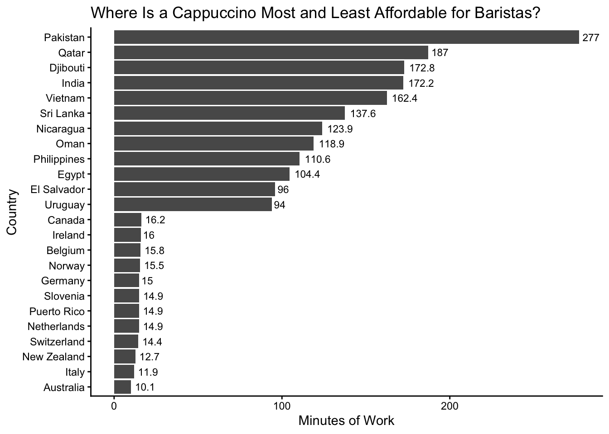
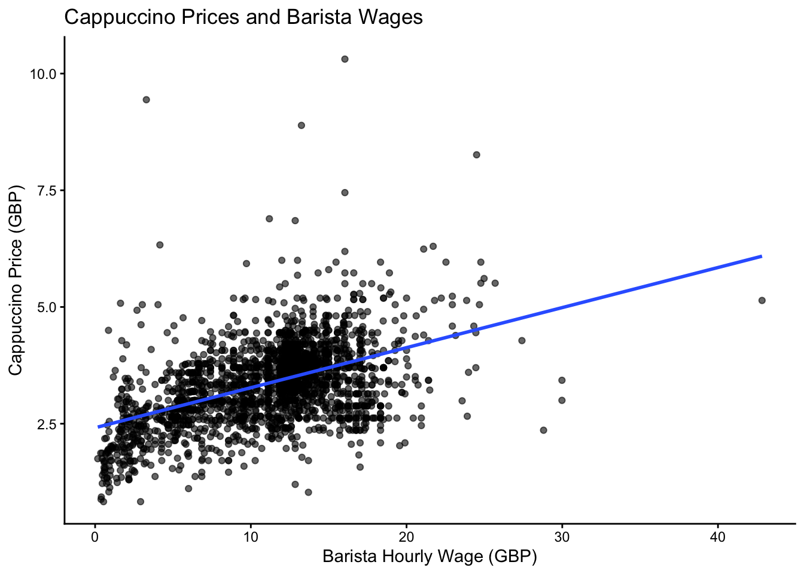
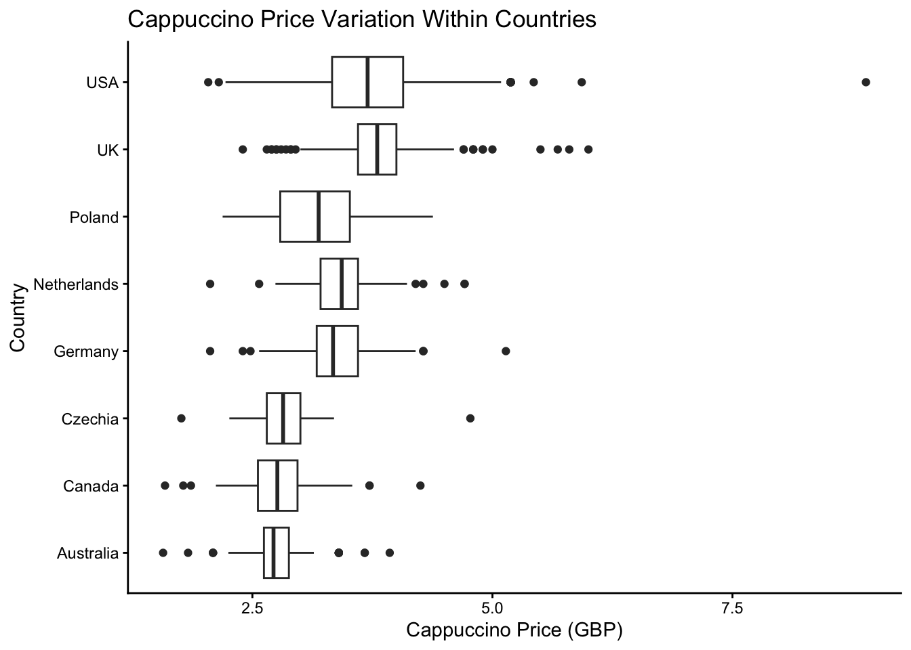

Explore the week’s TidyTuesday challenge. Develop a research question, then answer it through a short data story mainly composed of effective visualizations. Provide sufficient background for readers to grasp your narrative. Refer to the Homework Instructions ⭐ page on the course website for details on how to submit this part.
Background： The Cappuccino Index measures how many minutes a barista must work to afford a small cappuccino in their country. Because both wages and coffee prices vary across countries, the index provides a simple way to compare affordability from the perspective of cafe workers.
Research question: How much does cappuccino affordability vary across countries, and what factors help explain these differences?
library(tidyverse)
Warning: package 'ggplot2' was built under R version 4.5.2
── Attaching core tidyverse packages ──────────────────────── tidyverse 2.0.0 ──
✔ dplyr 1.1.4 ✔ readr 2.1.5
✔ forcats 1.0.0 ✔ stringr 1.5.1
✔ ggplot2 4.0.2 ✔ tibble 3.3.0
✔ lubridate 1.9.4 ✔ tidyr 1.3.1
✔ purrr 1.1.0
── Conflicts ────────────────────────────────────────── tidyverse_conflicts() ──
✖ dplyr::filter() masks stats::filter()
✖ dplyr::lag() masks stats::lag()
ℹ Use the conflicted package (<http://conflicted.r-lib.org/>) to force all conflicts to become errors
Rows: 2594 Columns: 10
── Column specification ────────────────────────────────────────────────────────
Delimiter: ","
chr (3): country, city, original_currency
dbl (4): hourly_wage_gbp, price_gbp, price, hourly_wage
lgl (3): urban, suburban, rural
ℹ Use `spec()` to retrieve the full column specification for this data.
ℹ Specify the column types or set `show_col_types = FALSE` to quiet this message.
Rows: 87 Columns: 6
── Column specification ────────────────────────────────────────────────────────
Delimiter: ","
chr (2): country, index_as_time
dbl (4): index, n, minutes, seconds
ℹ Use `spec()` to retrieve the full column specification for this data.
ℹ Specify the column types or set `show_col_types = FALSE` to quiet this message.
highest <- cappuccino_index %>%slice_max(index, n =12)lowest <- cappuccino_index %>%slice_min(index, n =12)plot_data <-bind_rows(highest, lowest)ggplot(plot_data, aes(x =reorder(country, index), y = index)) +geom_col() +geom_text(aes(label =round(index, 1)), hjust =-0.2, size =3) +coord_flip() +labs(x ="Country", y ="Minutes of Work", title ="Where Is a Cappuccino Most and Least Affordable for Baristas?") +theme_classic()

The affordability of a cappuccino varies from country to country. Taking the two extremes from the graph above, a barista in Pakistan would need to work 277 minutes to afford a small cappuccino, whereas a barista in Australia would only need to work 10 minutes to afford the same. Countries such as Qatar, Djibouti, India and Vietnam also have high Cappuccino Index values. This reveals considerable differences in the purchasing power of baristas worldwide.
cafe %>%ggplot(aes(x = hourly_wage_gbp, y = price_gbp)) +geom_point(alpha =0.6) +geom_smooth(method ="lm", se =FALSE) +labs(x ="Barista Hourly Wage (GBP)", y ="Cappuccino Price (GBP)", title ="Cappuccino Prices and Barista Wages") +theme_classic()
`geom_smooth()` using formula = 'y ~ x'

Cappuccino prices and barista wages show a positive association: cafes in places with higher barista wages also tend to charge more for cappuccinos. However, the points are widely dispersed around the fitted line, indicating that wage alone does not determine cappuccino prices. This helps explain why affordability cannot be understood from price alone—the relationship between the price of a cappuccino and the wages earned by baristas is what matters.
top_countries <- cafe %>%count(country, sort =TRUE) %>%slice_head(n =8) %>%pull(country)cafe %>%filter(country %in% top_countries) %>%ggplot(aes(x = country, y = price_gbp)) +geom_boxplot() +coord_flip() +labs(x ="Country", y ="Cappuccino Price (GBP)", title ="Cappuccino Price Variation Within Countries") +theme_classic()

In some countries, the price of a cappuccino varies significantly, meaning that cafes within the same country do not necessarily charge similar prices. For instance, the US and the UK show a wide price range with several outliers, whereas prices in other countries are relatively clustered. Such disparities indicate that a national average price can mask significant variations among individual cafes within the same country.
Countries differ a great deal in terms of cappuccino affordability. The Cappuccino Index expresses how long a barista would have to work to buy the same kind of cappuccino as is sold in bars in different countries.For example, a barista in Australia would need to work only about 10 minutes to afford a small cappuccino, while a barista in Pakistan would need to work about 277 minutes. This shows that the purchasing power of baristas differs substantially across countries. The relationship between wages and cappuccino prices helps explain part of this variation: higher-wage locations also tend to have higher coffee prices. But the relationship is not direct or even roughly equal in different locations, so higher wages do not necessarily translate directly into greater affordability. In addition, cappuccino prices vary within countries, suggesting that national averages can hide meaningful differences among individual cafes. So the Index expresses affordability, which depends on balance between baristas’ wages and the prices of cappuccinos. These results should be interpreted with caution. The number of cafes included in the sample for each country varies, and some countries have relatively small samples. Furthermore, the data only includes those cafes that have been observed, also does not take into account a number of factors which could influence purchasing power, such as tips and taxes, as well as general differences in cost of living between countries and cities.